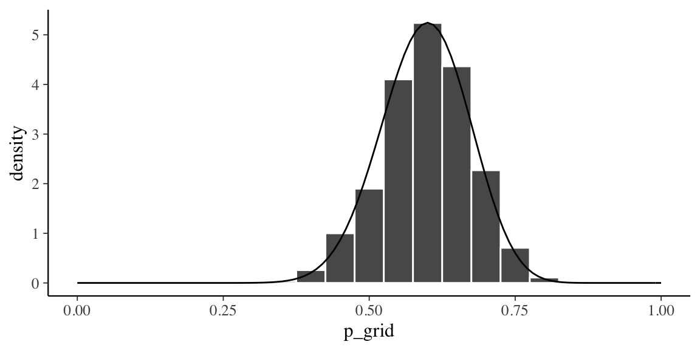
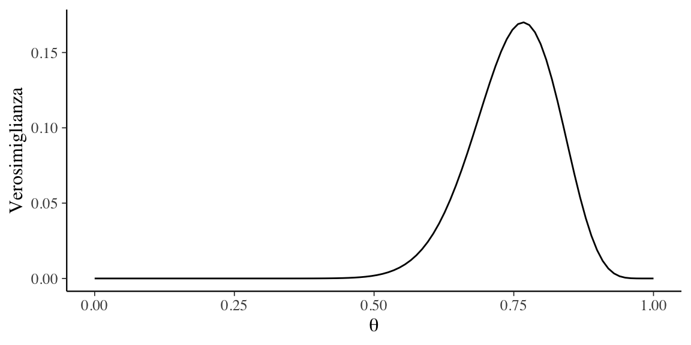
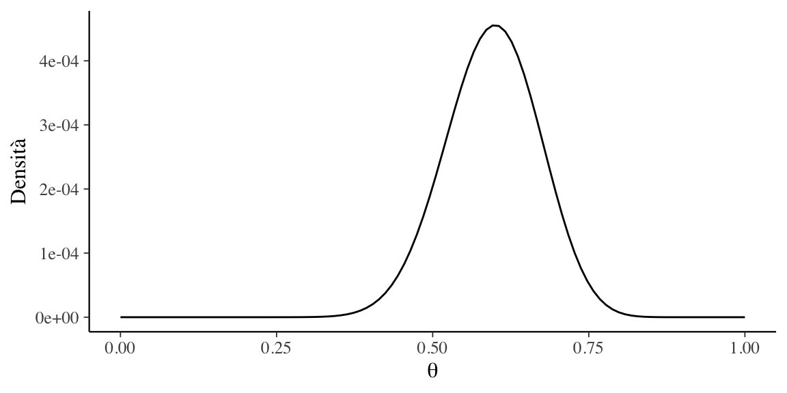

Data Science per psicologi
2021-10-10
Appendice A Aspettative degli individui depressi
Per fare pratica, applichiamo il metodo basato su griglia ad un campione di dati reali. Zetsche, Bürkner, and Renneberg (2019) si sono chiesti se gli individui depressi manifestino delle aspettative accurate circa il loro umore futuro, oppure se tali aspettative siano distorte negativamente. Esamineremo qui i 30 partecipanti dello studio di Zetsche, Bürkner, and Renneberg (2019) che hanno riportato la presenza di un episodio di depressione maggiore in atto. All’inizio della settimana di test, a questi pazienti è stato chiesto di valutare l’umore che si aspettavano di esperire nei giorni seguenti della settimana. Mediante una app, i partecipanti dovevano poi valutare il proprio umore in cinque momenti diversi di ciascuno dei cinque giorni successivi. Lo studio considera diverse emozioni, ma qui ci concentriamo solo sulla tristezza.
Sulla base dei dati forniti dagli autori, abbiamo calcolato la media dei giudizi relativi al livello di tristezza raccolti da ciascun partecipante tramite la app. Tale media è stata poi sottratta dall’aspettativa del livello di tristezza fornita all’inizio della settimana. La discrepanza tra aspettative e realtà è stata considerata come un evento dicotomico: valori positivi di tale differenza indicano che le aspettative circa il livello di tristezza erano maggiori del livello di tristezza effettivamente esperito — ciò significa che le aspettative future risultano negativamente distorte (evento codificato con “1”). Viceversa, si ha che le aspettative risultano positivamente distorte se la differenza descritta in precedenza assume un valore negativo (evento codificato con “0”).
Nel campione dei 30 partecipanti clinici di Zetsche, Bürkner, and Renneberg (2019), le aspettative future di 23 partecipanti risultano distorte negativamente e quelle di 7 partecipanti risultano distorte positivamente. Chiameremo \(\theta\) la probabilità dell’evento “le aspettative del partecipante sono distorte negativamente”. Ci poniamo il problema di ottenere una stima a posteriori di \(\theta\) usando il metodo basato su griglia.
A.1 La griglia
Fissiamo una griglia di \(n = 50\) valori equispaziati nell’intervallo [0, 1] per il parametro \(\theta\):
n_points <- 50
p_grid <- seq(from = 0, to = 1, length.out = n_points)
p_grid
#> [1] 0.00000000 0.02040816 0.04081633 0.06122449 0.08163265
#> [6] 0.10204082 0.12244898 0.14285714 0.16326531 0.18367347
#> [11] 0.20408163 0.22448980 0.24489796 0.26530612 0.28571429
#> [16] 0.30612245 0.32653061 0.34693878 0.36734694 0.38775510
#> [21] 0.40816327 0.42857143 0.44897959 0.46938776 0.48979592
#> [26] 0.51020408 0.53061224 0.55102041 0.57142857 0.59183673
#> [31] 0.61224490 0.63265306 0.65306122 0.67346939 0.69387755
#> [36] 0.71428571 0.73469388 0.75510204 0.77551020 0.79591837
#> [41] 0.81632653 0.83673469 0.85714286 0.87755102 0.89795918
#> [46] 0.91836735 0.93877551 0.95918367 0.97959184 1.00000000A.2 Distribuzione a priori
Supponiamo di avere scarse credenze a priori sulla tendenza di un individuo clinicamente depresso a manifestare delle aspettative distorte negativamente circa il suo umore futuro. Imponiamo quindi una distribuzione non informativa sulla distribuzione a priori di \(\theta\) — ovvero, una distribuzione uniforme nell’intervallo [0, 1]. Dato che consideriamo soltanto \(n = 50\) valori possibili per il parametro \(\theta\), creiamo un vettore di 50 elementi che conterrà i valori della distribuzione a priori scalando ciascun valore del vettore per \(n\) in modo tale che la somma di tutti i valori sia uguale a 1.0:
prior1 <- dbeta(p_grid, 1, 1) / sum(dbeta(p_grid, 1, 1))
prior1
#> [1] 0.02 0.02 0.02 0.02 0.02 0.02 0.02 0.02 0.02 0.02 0.02
#> [12] 0.02 0.02 0.02 0.02 0.02 0.02 0.02 0.02 0.02 0.02 0.02
#> [23] 0.02 0.02 0.02 0.02 0.02 0.02 0.02 0.02 0.02 0.02 0.02
#> [34] 0.02 0.02 0.02 0.02 0.02 0.02 0.02 0.02 0.02 0.02 0.02
#> [45] 0.02 0.02 0.02 0.02 0.02 0.02Verifichiamo:
sum(prior1)
#> [1] 1La distribuzione a priori così costruita è rappresentata nella figura A.1.
p1 <- data.frame(p_grid, prior1) %>%
ggplot(aes(x = p_grid, xend = p_grid, y = 0, yend = prior1)) +
geom_line() +
geom_segment() +
ylim(0, 0.17) +
labs(
x = "Parametro \U03B8",
y = "Probabilità a priori",
title = "50 punti"
)
p1Figura A.1: Rappresentazione grafica della distribuzione a priori per il parametro $ heta$, ovvero la probabilità di aspettative future distorte negativamente.
A.3 Funzione di verosimiglianza
Calcoliamo ora la funzione di verosimiglianza utilizzando i 50 valori \(\theta\) definiti in precedenza. A ciascuno dei valori della griglia applichiamo la formula binomiale, tendendo costanti i dati (ovvero 23 “successi” in 30 prove). Ad esempio, in corrispondenza del valore \(\theta = 0.816\), l’ordinata della funzione di verosimiglianza diventa
\[\begin{equation} \binom{30}{23} \cdot 0.816^{23} \cdot (1 - 0.816)^{7} = 0.135.\notag \end{equation}\]
Per \(\theta = 0.837\), l’ordinata della funzione di verosimiglianza sarà
\[\begin{equation} \binom{30}{23} \cdot 0.837^{23} \cdot (1 - 0.837)^{7} = 0.104.\notag \end{equation}\]
Dobbiamo svolgere questo calcolo per tutti gli elementi della griglia. Usando \(\R\), tale risultato si trova nel modo seguente:
likelihood <- dbinom(x = 23, size = 30, prob = p_grid)
likelihood
#> [1] 0.000000e+00 2.352564e-33 1.703051e-26 1.644169e-22
#> [5] 1.053708e-19 1.525217e-17 8.602222e-16 2.528440e-14
#> [9] 4.606907e-13 5.819027e-12 5.499269e-11 4.105534e-10
#> [13] 2.520191e-09 1.311195e-08 5.919348e-08 2.362132e-07
#> [17] 8.456875e-07 2.749336e-06 8.196948e-06 2.259614e-05
#> [21] 5.798673e-05 1.393165e-04 3.148623e-04 6.720574e-04
#> [25] 1.359225e-03 2.611870e-03 4.778973e-03 8.340230e-03
#> [29] 1.390025e-02 2.214199e-02 3.372227e-02 4.909974e-02
#> [33] 6.830377e-02 9.068035e-02 1.146850e-01 1.378206e-01
#> [37] 1.568244e-01 1.681749e-01 1.688979e-01 1.575211e-01
#> [41] 1.348746e-01 1.043545e-01 7.133007e-02 4.165680e-02
#> [45] 1.972669e-02 6.936821e-03 1.535082e-03 1.473375e-04
#> [49] 1.868105e-06 0.000000e+00
La funzione dbinom(x, size, prob) richiede che vengano specificati tre parametri: il numero di “successi”, il numero di prove e la probabilità di successo. Nella chiamata precedente, x (numero di successi) e size (numero di prove bernoulliane) sono degli scalari e prob è il vettore p_grid. In tali circostanze, l’output di dbinom() è il vettore che abbiamo chiamato likelihood. Gli elementi di tale vettore sono stati calcolati applicando la formula della distribuzione binomiale a ciascuno dei 50 elementi della griglia, tenendo sempre costanti i dati [ovvero, x (il numero di successi) e size (numero di prove bernoulliane)]; ciò che varia è il valore prob, che assume valori diversi (p_grid) in ciascuna cella della griglia.
La chiamata a dbinom() produce dunque un vettore i cui valori corrispondono all’ordinata della funzione di verosimiglianza per per ciascun valore \(\theta\) specificato in p_grid. La verosimiglianza discretizzata così ottenuta è riportata nella figura A.2.
p2 <- data.frame(p_grid, likelihood) %>%
ggplot(aes(x = p_grid, xend = p_grid, y = 0, yend = likelihood)) +
geom_segment() +
ylim(0, 0.17) +
labs(
x = "Parametro \U03B8",
y = "Verosimiglianza"
)
p2Figura A.2: Rappresentazione della funzione di verosimiglianza per il parametro \(\theta\), ovvero la probabilità di aspettative future distorte negativamente.
A.4 Distribuzione a posteriori
L’approssimazione discretizzata della distribuzione a posteriori \(p(\theta \mid y)\) si ottiene facendo il prodotto della verosimiglianza e della distribuzione a priori per poi scalare tale prodotto per una costante di normalizzazione. Il prodotto \(p(\theta)\mathcal{L}(y \mid \theta)\) produce la distribuzione a posteriori non standardizzata.
Nel caso di una distribuzione a priori non informativa (ovvero una distribuzione uniforme), per ottenere la funzione a posteriori non standardizzata è sufficiente moltiplicare ciascun valore della funzione di verosimiglianza per 0.02. Per esempio, per il primo valore della funzione di verosimiglianza usato quale esempio poco sopra, abbiamo \(0.135 \cdot 0.02\); per il secondo valore dell’esempio abbiamo \(0.104 \cdot 0.02\); e così via. Possiamo svolgere tutti i calcoli usando \(\R\) nel modo seguente:1
unstd_posterior <- likelihood * prior1
unstd_posterior
#> [1] 0.000000e+00 4.705127e-35 3.406102e-28 3.288337e-24
#> [5] 2.107415e-21 3.050433e-19 1.720444e-17 5.056880e-16
#> [9] 9.213813e-15 1.163805e-13 1.099854e-12 8.211068e-12
#> [13] 5.040382e-11 2.622390e-10 1.183870e-09 4.724263e-09
#> [17] 1.691375e-08 5.498671e-08 1.639390e-07 4.519229e-07
#> [21] 1.159735e-06 2.786331e-06 6.297247e-06 1.344115e-05
#> [25] 2.718450e-05 5.223741e-05 9.557946e-05 1.668046e-04
#> [29] 2.780049e-04 4.428398e-04 6.744454e-04 9.819948e-04
#> [33] 1.366075e-03 1.813607e-03 2.293700e-03 2.756411e-03
#> [37] 3.136488e-03 3.363497e-03 3.377958e-03 3.150422e-03
#> [41] 2.697491e-03 2.087091e-03 1.426601e-03 8.331361e-04
#> [45] 3.945339e-04 1.387364e-04 3.070164e-05 2.946751e-06
#> [49] 3.736209e-08 0.000000e+00Avendo calcolato i valori della funzione a posteriori non standardizzata è poi necessario dividere per una costante di normalizzazione. Nel caso discreto, trovare il denominatore del teorema di Bayes è facile: esso è uguale alla somma di tutti i valori della distribuzione a posteriori non normalizzata. Per i dati presenti, tale costante di normalizzazione è uguale a 0.032:
sum(unstd_posterior)
#> [1] 0.0316129La standardizzazione dei due valori usati come esempio è data da: \(0.135 \cdot 0.02 / 0.032\) e da \(0.104 \cdot 0.02 / 0.032\). Usiamo \(\R\) per svolgere questo calcolo su tutti i 50 valori di unstd_posterior così che la somma dei 50 i valori di posterior sia uguale a 1.0:
posterior <- unstd_posterior / sum(unstd_posterior)
posterior
#> [1] 0.000000e+00 1.488357e-33 1.077440e-26 1.040188e-22
#> [5] 6.666313e-20 9.649330e-18 5.442222e-16 1.599625e-14
#> [9] 2.914574e-13 3.681425e-12 3.479129e-11 2.597379e-10
#> [13] 1.594406e-09 8.295316e-09 3.744893e-08 1.494410e-07
#> [17] 5.350268e-07 1.739376e-06 5.185824e-06 1.429552e-05
#> [21] 3.668548e-05 8.813904e-05 1.991986e-04 4.251792e-04
#> [25] 8.599178e-04 1.652408e-03 3.023432e-03 5.276472e-03
#> [29] 8.794033e-03 1.400820e-02 2.133450e-02 3.106310e-02
#> [33] 4.321259e-02 5.736920e-02 7.255582e-02 8.719259e-02
#> [37] 9.921545e-02 1.063963e-01 1.068538e-01 9.965619e-02
#> [41] 8.532881e-02 6.602021e-02 4.512719e-02 2.635430e-02
#> [45] 1.248015e-02 4.388601e-03 9.711744e-04 9.321354e-05
#> [49] 1.181862e-06 0.000000e+00Verifichiamo:
sum(posterior)
#> [1] 1La distribuzione a posteriori così trovata non è altro che la versione normalizzata della funzione di verosimiglianza: questo avviene perché la distribuzione a priori uniforme non ha aggiunto altre informazioni oltre a quelle che erano già fornite dalla funzione di verosimiglianza. L’approssimazione discretizzata di \(p(\theta \mid y)\) che abbiamo appena trovato è riportata nella figura A.3.
p3 <- data.frame(p_grid, posterior) %>%
ggplot(aes(x = p_grid, xend = p_grid, y = 0, yend = posterior)) +
geom_segment() +
ylim(0, 0.17) +
labs(
x = "Parametro \U03B8",
y = "Probabilità a posteriori"
)
p3Figura A.3: Rappresentazione della distribuzione a posteriori per il parametro \(\theta\), ovvero la probabilità di aspettative future distorte negativamente.
I grafici delle figure A.1, A.2 e A.3 sono state calcolati utilizzando una griglia di 50 valori equi-spaziati per il parametro \(\theta\). I segmenti verticali rappresentano l’intensità della funzione in corrispondenza di ciascuna modalità parametro \(\theta\). Nella figura A.1 e nella figura A.3 la somma delle lunghezze dei segmenti verticali è uguale a 1.0; ciò non si verifica, invece, nel caso della figura A.3 (la funzione di verosimiglianza non è mai una funzione di probabilità, né nel caso discreto né in quello continuo).
A.5 La stima della distribuzione a posteriori (versione 2)
Continuiamo l’analisi di questi dati esaminiamo l’impatto di una distribuzione a priori informativa sulla distribuzione a posteriori. Una distribuzione a priori informativa riflette un alto grado di certezza a priori sui valori dei parametri del modello. Un ricercatore utilizza una distribuzione a priori informativa per introdurre nel processo di stima informazioni pre-esistenti alla raccolta dei dati, introducendo così delle restrizioni sulla possibile gamma di valori del parametro.
Nel caso presente, supponiamo che la letteratura psicologica fornisca delle informazioni su \(\theta\) (la probabilità che le aspettative future di un individuo clinicamente depresso siano distorte negativamente). Per fare un esempio, supponiamo (irrealisticamente) che tali conoscenze pregresse possano essere rappresentate da una Beta di parametri \(\alpha = 2\) e \(\beta = 10\). Tali ipotetiche conoscenze pregresse ritengono molto plausibili valori \(\theta\) bassi e considerano implausibili valori \(\theta > 0.5\). Questo è equivalente a dire che ci aspettiamo che le aspettative relative all’umore futuro siano distorte negativamente solo per pochissimi individui clinicamente depressi — ovvero, ci aspettiamo che la maggioranza degli individui clinicamente depressi sia inguaribilmente ottimista. Questa è, ovviamente, una credenza a priori del tutto irrealistica. La esamino qui, non perché abbia alcun senso nel contesto dei dati di Zetsche, Bürkner, and Renneberg (2019), ma soltanto per fare un esempio nel quale risulta chiaro come la distribuzione a posteriori sia una sorta di “compromesso” tra la distribuzione a priori e la verosimiglianza.
Con calcoli del tutto simili a quelli descritti sopra si giunge alla distribuzione a posteriori rappresentata nella figura A.4. Useremo ora una griglia di 100 valori per il parametro \(\theta\):
n_points <- 100
p_grid <- seq(from = 0, to = 1, length.out = n_points)Per la distribuzione a priori scegliamo una Beta(2, 10):
alpha <- 2
beta <- 10
prior2 <- dbeta(p_grid, alpha, beta) / sum(dbeta(p_grid, alpha, beta))
sum(prior2)
#> [1] 1Tale distribuzione a priori è rappresentata nella figura A.4:
plot_df <- data.frame(p_grid, prior2)
p4 <- plot_df %>%
ggplot(aes(x = p_grid, xend = p_grid, y = 0, yend = prior2)) +
geom_segment() +
ylim(0, 0.17) +
labs(
x = "",
y = "Probabilità a priori"
)
p4Figura A.4: Rappresentazione di una funzione a priori informativa per il parametro \(\theta\).
Calcoliamo il valore di verosimiglianza per ciascun punto della griglia:
likelihood <- dbinom(23, size = 30, prob = p_grid)Per ciascun punto della griglia, il prodotto tra la verosimiglianza e distribuzione a priori è dato da:
unstd_posterior2 <- likelihood * prior2È necessario normalizzare la distribuzione a posteriori discretizzata:
posterior2 <- unstd_posterior2 / sum(unstd_posterior2)Verifichiamo:
sum(posterior2)
#> [1] 1La nuova funzione a posteriori discretizzata è rappresentata nella figura A.5:
plot_df <- data.frame(p_grid, posterior2)
p5 <- plot_df %>%
ggplot(aes(x = p_grid, xend = p_grid, y = 0, yend = posterior2)) +
geom_segment() +
ylim(0, 0.17) +
labs(
x = "Parametro \U03B8",
y = "Probabilità a posteriori"
)
p5Figura A.5: Rappresentazione della funzione a posteriori per il parametro \(\theta\) calcolata utilizzando una distribuzione a priori informativa.
Facendo un confronto tra le figure A.4 e A.5 notiamo una notevole differenza tra la distribuzione a priori e la distribuzione a posteriori. In particolare, la distribuzione a posteriori risulta spostata verso destra su posizioni più vicine a quelle della verosimiglianza [figura A.2]. Si noti inoltre che, a causa dell’effetto della distribuzione a priori, le distribuzioni a posteriori delle figure A.3 e A.5 sono molto diverse tra loro.
Campioniamo ora 10,000 punti dall’approssimazione discretizzata della distribuzione a posteriori:
# Set the seed
set.seed(84735)
df <- data.frame(
p_grid,
posterior2
)
# Step 4: sample from the discretized posterior
post_samples <- df %>%
slice_sample(
n = 1e5,
weight_by = posterior2,
replace = TRUE
)Una rappresentazione grafica del campione casuale estratto dalla distribuzione a posteriori \(p(\theta \mid y)\) è data da:
post_samples %>%
ggplot(aes(x = p_grid)) +
geom_histogram(
aes(y = ..density..),
color = "white",
binwidth = 0.05
) +
stat_function(fun = dbeta, args = list(25, 17)) +
lims(x = c(0, 1))
All’istogramma è stata sovrapposta la corretta distribuzione a posteriori, ovvero una Beta di parametri 25 (\(y + \alpha\) = 23 + 2) e 17 (\(n - y + \beta\) = 30 - 23 + 10).
La stima della moda a posteriori si ottiene con
df$p_grid[which.max(df$posterior2)]
#> [1] 0.5959596e corrisponde a
\[ \Mo = \frac{\alpha -1}{\alpha + \beta - 2} = \frac{25 - 1}{25 + 17 - 2} = 0.6. \]
La stima della media a posteriori si ottiene con
mean(post_samples$p_grid)
#> [1] 0.5953337e corrisponde a
\[ \bar{\theta} = \frac{\alpha}{\alpha + \beta} = \frac{25}{25 + 17} \approx 0.5952. \]
La stima della mediana a posteriori si ottiene con
median(post_samples$p_grid)
#> [1] 0.5959596e corrisponde a
\[ \Me = \frac{\alpha - \frac{1}{3}}{\alpha + \beta - \frac{2}{3}} \approx 0.5968. \]
A.6 Versione 2
Possiamo semplificare i calcoli precedenti definendo le funzioni likelihood(), prior() e posterior().
Per calcolare la funzione di verosimiglianza per i 30 valori di Zetsche, Bürkner, and Renneberg (2019) useremo la funzione likelihood():
x <- 23
N <- 30
param <- seq(0, 1, length.out = 100)
likelihood <- function(param, x = 23, N = 30) {
dbinom(x, N, param)
}
tibble(
x = param,
y = likelihood(param)
) %>%
ggplot(aes(x, y)) +
geom_line() +
labs(
x = expression(theta),
y = "Verosimiglianza"
)
La funzione likelihood() ritorna l’ordinata della verosimiglianza binomiale per ciascun valore del vettore param in input.
Quale distribuzione a priori utilizzeremo una \(\mbox{Beta}(2, 10)\) che è implementata nella funzione prior():
prior <- function(param, alpha = 2, beta = 10) {
param_vals <- seq(0, 1, length.out = 100)
dbeta(param, alpha, beta) # / sum(dbeta(param_vals, alpha, beta))
}
tibble(
x = param,
y = prior(param)
) %>%
ggplot(aes(x, y)) +
geom_line() +
labs(
x = expression(theta),
y = "Densità"
)
La funzione posterior() ritorna il prodotto della densità a priori e della verosimiglianza:
posterior <- function(param) {
likelihood(param) * prior(param)
}
tibble(
x = param,
y = posterior(param)
) %>%
ggplot(aes(x, y)) +
geom_line() +
labs(
x = expression(theta),
y = "Densità"
)
La distribuzione a posteriori non normalizzata mostrata nella figura replica il risultato ottenuto con il codice utilizzato nella prima parte di questo Capitolo. Per l’implementazione dell’algoritmo di Metropolis non è necessaria la normalizzazione della distribuzione a posteriori.
References
Ricordiamo il principio dell’aritmetica vettorializzata: i vettori
likelihoodeprior1sono entrambi costituiti da 50 elementi. Se facciamo il prodotto tra i due vettori otteniamo un vettore di 50 elementi, ciascuno dei quali uguale al prodotto dei corrispondenti elementi dei vettorilikelihoodeprior1.↩︎